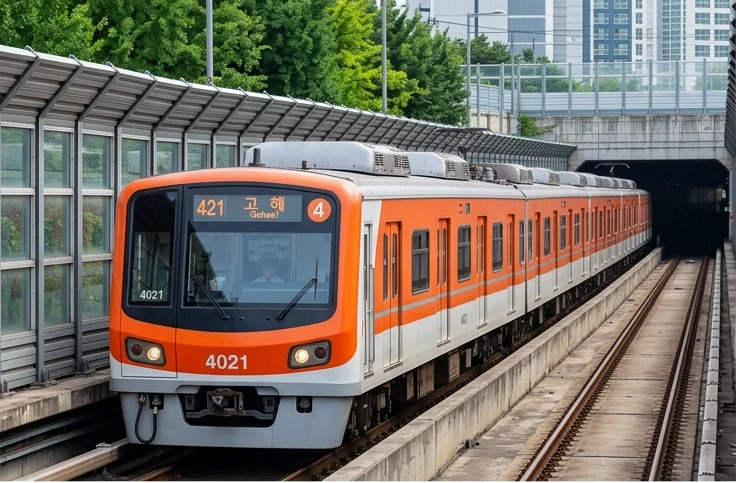
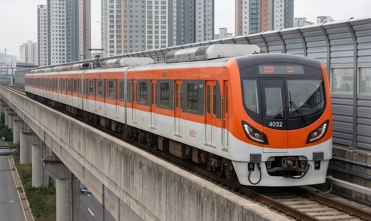
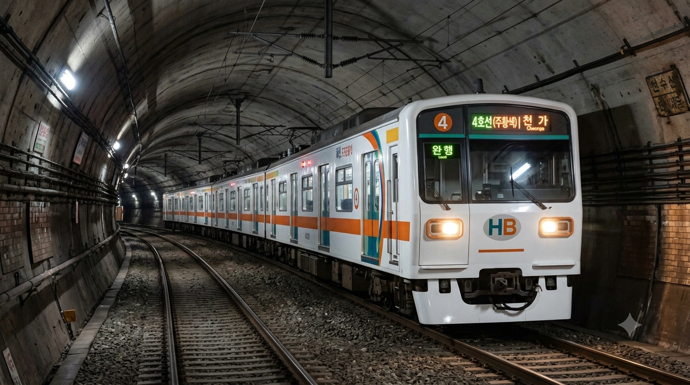

효빈교통공사 4000호대 전동차
1. 개요
"효빈의 숨은 보석, 귤색 전동차"
3표 차 낙선과 정치 싸움에 휘말려 4년이나 늦게 달린 비운의 노선
효빈교통공사가 효빈 도시철도 4호선에서 운용 중인 통근형 전동차이다.
2003년 3월 5일, 4호선 1단계 개통(남구청~이자)과 함께 도입되었다. 노선 색상은 오렌지색(#FF5522)으로, 효빈시의 따뜻하고 활기찬 에너지를 상징하며, 4000호대 전동차들 역시 차량 전체를 가로지르는 굵직한 귤색 띠를 두르고 있다.
주로 5량 1편성으로 운행되지만, 일부 증차분(2~3차, 4~5차)은 혼잡도 완화를 위해 6량으로 증결되어 운행된다. 차량 자체는 잔고장 없는 평범한 중형 전동차지만, 효빈시 교통 정책의 난맥상과 끝없는 정치적 격변을 온몸으로 맞으며 도입된 파란만장한 역사를 가지고 있다.
2. 역사 (파란만장한 도입사)
이 차량과 4호선의 도입 역사는 효빈시 정치사와 궤를 같이한다. 바람 잘 날 없는 효빈 정계의 완벽한 축소판
- 공항에 밀린 서러움 (1989~2003): 초기 계획상으로는 3호선보다 먼저 개통될 예정이었으나, 효빈국제공항 이전 문제로 예산 우선순위에서 처참하게 밀려났다. 엎친 데 덮친 격으로 외환위기까지 겹쳐 공사가 무기한 중단되었다가, 2003년에야 겨우겨우 1차분이 굴러가기 시작했다.
- 3표의 나비효과 (2006): 2006년 효빈시장 지방선거에서 현직이던 박현만 시장이 단 3표 차이로 앙숙 윤대환 후보에게 패배하는 초유의 사태가 발생하자, 박현만은 임기 종료 이틀 전 앵내역과 탄자역을 기습 개통시키는 이른바 '알박기 개통'을 감행했다. 이 덕분에 창고에서 썩어가던 2차 도입분이 급하게 빛을 보게 되었다.
- 암흑기 (2006~2010): 윤대환 시장 취임 직후 전임자의 흔적 지우기 명목으로 4호선 추가 연장은 전면 백지화되었다. 평당차량사업소는 시설이 완공되었으나 본선과 이어지는 선로가 없어, 차량기지 내부에서만 앞뒤로 왔다 갔다 하는 9년짜리 '유령 운행'을 해야 했다.
- 뒤늦은 부활 (2015): 4호선의 주적(?)이었던 윤대환 시장 퇴임 후 멈춰있던 시계가 다시 돌기 시작해 공사가 재개되었고, 당초 계획보다 4년이나 늦은 2015년에야 4, 5차 도입분(일명 뱀눈이)이 운행을 시작했다.
3. 분류
도입 시기, 디자인, 그리고 정치적 상황(...)에 따라 크게 3가지 그룹으로 엄격하게 나뉜다.
3.1. 1차 도입분 (2003년)
- 차량번호: 4001~4019 (총 19편성)
- 특징: 4호선 1단계 개통과 함께 도입된 초기형 차량이다. 전량 5량 1편성으로 깔끔하게 통일되어 있다. 외환위기의 모진 풍파를 견뎌낸 인내의 상징이자, 도입 당시 최신 기술이던 초창기 IGBT 인버터를 탑재해 승차감이 부드러웠다.
이때만 해도 4호선의 앞날이 쭉쭉 뻗어나가는 꽃길일 줄 알았다(...)
3.2. 2, 3차 도입분 (2006년)

- 차량번호: 4020~4029 (총 10편성)
- 특징: 소원역 연장에 맞춰 도입되었다. 늘어난 수요와 혼잡도 완화를 위해 과감하게 6량으로 도입되었다. 1차분과 외형은 거의 비슷하지만 전면부 LED 전광판 시인성이 대폭 개선되었다. '3표 차 패배' 직후 박현만 시장의 폭주(?)에 가까운 알박기 개통으로 부랴부랴 비닐을 뜯고 운행을 시작한 전설적인 차량이다.
어른들의 사정의 진수
3.3. 4, 5차 도입분 (2015년)

- 차량번호: 4030~4044 (총 16편성)
- 특징: 전임 시장 시절 사업이 전면 백지화되었다가 4년 늦게 도입된 비운의 차량들이다. 외형이 완전히 바뀌어 매서운 눈매의 일명 '뱀눈이' 디자인이 적용되었으며, 내부 객실 통로문이 자동문으로 업그레이드되었다. 예산 집행 문제로 4030~4039편성은 5량, 4040~4044편성은 6량으로 도입되어 차량 편성이 뒤죽박죽이다.
정치판의 혼돈이 차량 편성에까지 직접적인 영향을 미친 훌륭한 사례(...)
4. 배속 및 운용
고해차량사업소 (Gohae Depot)
"러브 라이브 성지순례의 핫플레이스"
2024년부터 4호선의 중정비를 전담하는 메인 전용 기지가 되었다. 지명 '고해(高海)'와 인근 '천가'역이라는 명칭 때문에 일본 애니메이션 러브라이브! 시리즈 팬들 사이에서 성지순례 코스로 소문나 주말마다 사진 찍는 오타쿠들로 붐빈다.
평당차량사업소 (Pyeongdang Depot)
"주민들의 환영과 3표의 비극이 교차한 곳"
기지가 들어오면 역도 무조건 생긴다며 인근 주민들이 열렬히 환영했으나, 정치적 이유로 노선 공사가 엎어지면서 역 개통이 9년이나 지연되는 비극을 겪었다. 현재는 일부 차량의 경정비와 주박용으로 쓰인다.
5. 여담



- 래핑 열차 맛집: 효빈시의 전폭적인(?) 서브컬처 지원 행보 덕에 유독 래핑 열차가 자주 다닌다. 효빈교통공사 공식 마스코트인 다로나 래핑 열차는 기본이고, 심지어 2024년에는 애니메이션 BanG Dream!의 주인공이자 4호선 명예 홍보대사인 토야마 카스미 래핑 열차까지 대대적으로 운행했다!
덕분에 고해기지 인근은 매일같이 대포카메라를 든 철덕과 오타쿠들의 정모 장소가 되었다 카더라--반짝반짝 두근두근 4호선-- - 귤 전동차: 노선 색상이 쨍한 주황색이라 시민들에게 친근하게 '귤차', '오렌지' 등으로 불린다.
- 정치적 바로미터: 4호선 연장 지연 사태는 남구 지역 주민들의 멱살을 잡게 만들며 남구 정치 지형을 완전히 바꿔버리는 결정적 계기가 되었다.
- 1호선과의 악연: 과거 1호선 열차 부족으로 단기 알바를 뛰던 시절, 광활한 9량 승강장에 앙증맞은(?) 5량짜리 4호선이 달랑 들어와 승강장 끝에 있던 1호선 승객들을 멘붕에 빠뜨린 전적이 있다.
5.1. 운행 일화 및 사건사고
1. 2006년 긴급 개통 단행과 앵내·탄자 주민들의 구원투수
2006년 제4회 전국동시지방선거에서 효빈시장 박현만 후보가 숙적 윤대환 후보에게 단 3표 차이로 재검표 끝에 패배하는 초유의 사태가 발생했을 때 벌어진 일이다. 당선자 윤대환이 취임 즉시 대대적인 철도 축소 및 백지화를 강행할 것이 확실시되는 상황 속에서, 앵내역과 탄자역 일대는 마침 대규모 개발을 앞두고 인구가 폭발적으로 유입되던 시기였다. 만약 이때 개통을 미뤘다면 이 지역 주민들은 철도 없는 지옥 같은 교통난을 고스란히 떠안아야 했다. 이에 박현만 시장은 임기 종료 이틀 전 4호선 2단계 구간(앵내역, 탄자역)의 준공 허가를 긴급히 강행하여 2차 도입분(4020~4029편성) 전동차들을 투입시켰다. 비록 급작스러운 투입으로 현장 기관사들은 호흡을 맞추느라 진땀을 흘렸으나, 철도 축소 위기 속에서 당장 출퇴근길 발이 급했던 앵내·탄자 지역 주민들은 지하철 개통에 적극 환호하며 안도의 한숨을 내쉬었다.
2. 박효빈 시장의 카스미 열차 운행식 대관종 퍼포먼스
2024년 4호선 명예 홍보대사인 토야마 카스미(BanG Dream!) 콜라보 래핑 열차 4020편성이 첫 운행을 시작하던 날, 승강장에서 열린 공식 운행식에서 벌어진 해프닝이다.[2]카스미 열차 운행식 현장[cite: 13] 효빈시장이자 진성 뱅드리머인 1996년생 젊은 시장 박효빈은 정장을 빼입고 단상에 올라 마이크를 잡고는, 열차 측면에 래핑된 거대한 카스미 일러스트를 자랑스럽게 손으로 가리켰다.[3]박효빈 시장의 발표 모습[cite: 13] 시장은 취재진 앞에서 "반짝반짝 두근두근한 효빈시를 만들겠습니다!"라는 대사까지 육성으로 뻔뻔하게 외쳐 옆에 서 있던 교통공사 사장과 시의원들을 아연실색하게 만들었다.[4]참석자들의 박수와 반응[cite: 13] 이 광기 어린 운행식 사진은 인터넷 커뮤니티로 빠르게 퍼져나갔고, 효빈시에는 오타쿠 시장이 지배한다는 밈을 기정사실로 굳히는 데 엄청난 공헌을 했다.
3. 카스미 래핑 열차 내부의 시각적 파괴력
앞서 언급된 4020편성 카스미 특별 래핑 열차는 외부뿐만 아니라 객실 내부까지 승객들의 정신을 아득하게 만드는 화려함을 자랑한다.[5]카스미 열차 내부 전체 모습[cite: 10] 객실 내 손잡이는 카스미를 상징하는 쨍한 오렌지색과 파란색 손잡이가 교차로 배치되어 있으며, 차량 문과 양옆 유리창 사이 공간에는 베이스 기타를 들고 윙크하는 카스미의 초대형 일러스트가 위압감 있게 박혀있다.[6]오렌지/파란색 손잡이 및 도어 일러스트[cite: 10] 심지어 바닥 중앙 통로에는 'BanG Dream! X 효빈교통공사 콜라보'라는 큼지막한 로고가 융단처럼 깔려있고, 좌석 시트마저 오렌지와 블루 패턴의 특주 직물로 싹 갈아엎어졌다.[7]바닥 로고 래핑 및 시트 패턴[cite: 10] 아침 출근길 피곤에 쩔은 직장인들이 이 열차에 탑승했다가 사방에서 뿜어져 나오는 강렬한 별무늬와 "키라키라 도키도키!"하는 발랄한 안내방송에 기가 빨려 빈혈을 호소한다는 웃지 못할 후일담이 교통공사 고객센터로 종종 접수된다고 한다.
4. 4호선의 군기반장, 다로나 래핑 열차
4호선의 공식 마스코트이자 단정함의 결정체인 다로나를 테마로 한 4012편성 래핑 열차 내부에서 겪을 수 있는 독특한 경험이다.[8]다로나 래핑 열차 내부[cite: 11] 하얀색 셔츠에 다크 네이비 미니스커트, 그리고 4호선을 상징하는 붉은색 배지를 단 다로나의 차분한 일러스트가 객실 도어 측면 액자에 가지런히 걸려있어 카스미 열차와는 정반대의 차분한 분위기를 풍긴다.[9]다로나 일러스트 착장 및 액자 배치[cite: 11] 4호선 고유의 강렬한 귤색 직물 시트와 오렌지색 손잡이가 내부를 꽉 채우고 있으며, 천장 중앙의 구형 LED 전광판이 '이번 역: 천가 Cheonga Stn.'을 큼지막하게 띄워준다.[10]오렌지 시트, 손잡이 및 천장 LED[cite: 11] 이 열차의 진미는 다로나의 깐깐한 안내방송인데, 취객이 눕거나 쩍벌남이 등장하면 "타인을 배려하지 않는 승객은 4호선의 품격을 떨어뜨립니다"라는 다로나의 날 선 일침 방송이 스피커를 때려버린다. 덕분에 이 열차 안에서는 다들 도서관에 온 것처럼 허리를 꼿꼿이 세우고 간다
5. 평당차량기지 9년의 유령 운행 괴담
2006년 정치적 보복으로 4호선 연장 사업이 공중분해되면서 덩그러니 완공만 된 채 방치되었던 평당차량사업소의 눈물겨운 촌극이다. 차량기지는 완공되었지만 본선 영업 구간과 이어지는 선로가 뚫리지 않아, 기지 내에 갇힌 3대의 1세대 전동차들은 기계 부식을 막기 위해 무려 9년 동안 매일 새벽 기지 내부 500m 선로만 앞뒤로 왔다 갔다 하는 처량한 유령 운행을 해야만 했다. 밤마다 불이 꺼진 기지창 안에서 텅 빈 귤색 전동차 혼자 윙윙거리며 앞뒤로 움직이는 모습은 인근 주민들에게 공포의 대상이 되었고, 한동안 '평당기지에는 원한 맺힌 기관사 귀신이 밤마다 차를 몬다'는 도시전설이 파다하게 퍼졌다. 2015년에 마침내 본선 선로가 연결되며 열차들이 탈출(?)하던 날, 기지 직원들은 감격에 겨워 막걸리를 뿌리며 눈물을 훔쳤다고 한다.
6. 2018년 여름 1차 도입분 오렌지 사우나 사태
2018년 기상 관측 사상 최악의 폭염이 한반도를 강타했을 때, 노후화가 진행 중이던 1차 도입분(4001~4019편성) 전동차들의 에어컨이 단체로 파업을 선언하며 벌어진 대참사다. 하필 1차분 차량은 초기형 냉방기를 달고 있어 효율이 바닥이었는데, 밖이 40도에 육박하자 에어컨 컴프레서가 연달아 터져버린 것이다. 시각적으로도 더워 보이는 쨍한 오렌지색 띠를 두른 열차 내부는 말 그대로 찜질방 불가마로 돌변했다. 만원 전철 안에서 땀에 흠뻑 젖은 승객들이 "이건 오렌지 사우나다!", "사람 쪄 죽이는 귤 상자냐!"라며 분노의 민원 전화를 고객센터에 융단폭격했다. 결국 공사는 긴급 처방으로 모든 1차분 객실 천장에 공업용 선풍기를 덕지덕지 매달아 돌리는 촌극을 벌였고, 이 모습은 뉴스데스크에 '21세기 귤동차의 피서법'이라는 조롱 섞인 타이틀로 전국에 생중계되었다.
7. 고해기지 터널 과속 스캔들 및 심야 레이싱
고해차량사업소 인근 천가역으로 들어가는 깊은 지하 터널 구간은 선형이 거의 완벽한 직선으로 뻗어 있어 기관사들 사이에서 '아우토반'으로 불린다.[11]터널 주행 차량 묘사[cite: 12] 2023년 말, 일부 2차분 4021편성 전동차가 심야 막차 운행 시간대인 밤 11시 30분경 이 터널 구간에서 설계 최고 속도인 110km/h를 꽉 채워 밟고 폭주(?)하는 사건이 발생했다.[12]차량 번호 및 전면 표시[cite: 12] 앞 유리에 '4호선 천가행' 네온 불빛을 켜고 무서운 속도로 어두운 터널을 가르자, 열차풍이 미친 듯이 발생하여 천가역 승강장 스크린도어가 덜컹거리며 깨질 뻔했다.[13]천가역 종착 묘사[cite: 12] 퇴근을 빨리하고 싶었던 기관사의 일탈로 밝혀져 해당 기관사는 중징계를 받았으나, 당시 이 열차에 타고 있던 극소수의 승객들은 "효빈 4호선이 갑자기 KTX로 변신해서 놀랐지만 집에는 엄청 빨리 갔다"며 뜻밖의 호평(?)을 남기기도 했다.
8. 효빈철도박물관 4020호 전시관 네임택 대참사
효빈교통공사 철도박물관 내에 보존 처리되어 전시 중인 4020호 카스미 래핑 열차 앞에서 발생한 황당한 전시 행정 사고다.[14]철도박물관 4020호 차량 전시[cite: 14] 열차의 역사적 상징성을 기념하기 위해 4호선 공식 마스코트인 다로나의 실물 크기 등신대를 차량 바로 옆에 늠름하게 세워두었다.[15]다로나 등신대 배치[cite: 14] 그런데 개관 첫날, 깐깐한 덕후 관람객 한 명이 등신대 발밑에 놓인 공식 명판을 보고 경악을 금치 못했다. 명판에 "효빈교통공사 마스코트 - 히나 (Hina, Hyobin Metro Mascot)"라고, 다른 캐릭터의 이름표가 떡하니 붙어있었던 것이다![16]명판의 오타 디테일[cite: 14] 이 사실이 SNS를 타고 퍼지자 "외주 업체가 일 대충 했다", "다로나가 분노로 샷건을 칠 일이다"라며 조롱이 쏟아졌다. 공사 홍보팀은 개관 3시간 만에 달려와 네임택을 매직으로 벅벅 칠하고 임시로 다로나 스티커를 붙이는 촌극을 벌였으며, 이후 다로나의 캐릭터 설정에 "이름 틀리게 부르는 것을 극도로 혐오함"이라는 속성이 추가되는 나비효과를 낳았다.
6. 관련 문서
- 효빈교통공사
- 효빈 도시철도 4호선
- 고해차량사업소
- 윤대환 --4호선의 주적--